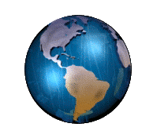

|
Открой для себя целый мир с другой стороны!
|

ПЛАНЕТАРИЙ "ЗВЕЗДНЫЙ"
Нижегородский планетарий им. Г. М. Гречко — муниципальное учреждение
культуры, осуществляющее свою деятельность в областях образования,
науки и культуры, связанных с исследованиями космоса, располагающее
собственной обсерваторией. Учредителем является департамент культуры
администрации города Нижнего Новгорода.
Планетарий был открыт в 1948 году. С 1994 является организационно-методическим
центром Ассоциации планетариев России и представительством международного
общества планетариев в России. В декабре 2005 года переехал в новое
здание. В 2007 году был установлен космический тренажер стыковки
корабля «Союз−ТМА» с Международной космической станцией. В 2016 году
Нижегородскому планетарию было присвоено имя прославленного летчика-космонавта,
дважды Героя Советского Союза Г. М. Гречко.

|
|
|
|